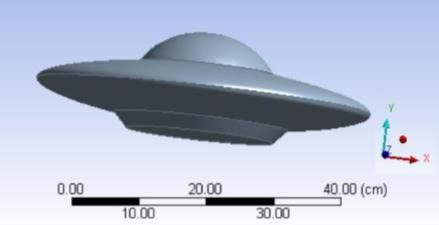
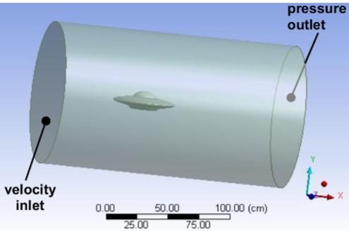
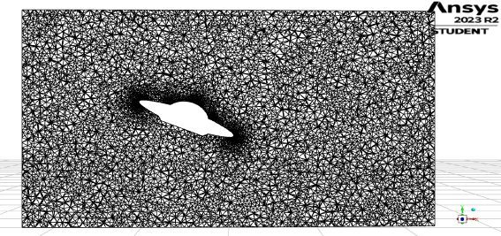
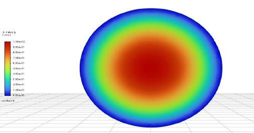
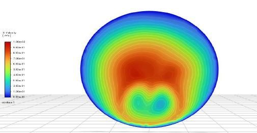

Aerodynamics
Saucer-Shaped Drone: 3D External Aerodynamics
Transient 3D flow past a saucer-shaped body tilted at 0°, 22.5° and 45° in a virtual wind tunnel.
- Category
- Aerodynamics
- Tools
- Ansys SpaceClaim · Fluent
- Context
- Arizona State University
- Period
- Aug–Dec 2023
Overview
The saucer geometry and a cylindrical wind tunnel were built in SpaceClaim. The body was tilted at three angles and solved in Fluent with a parabolic inlet velocity profile up to 100 m/s.
Setup and method
- Geometry and domain: saucer model and cylindrical tunnel with a velocity inlet and a pressure outlet.
- Mesh: extra-fine mesh refined around the body.
- Solver: transient simulation at tilt angles of 0°, 22.5° and 45°.
- Deliverables: pre-processing, solver setup, post-processing and reporting for four simulation tasks.
Results
The asymmetric body produced unstable flow and large lift-force oscillations in the transient simulation.
Figures






Next project: Vehicle Aerodynamic Drag with Add-on Devices →